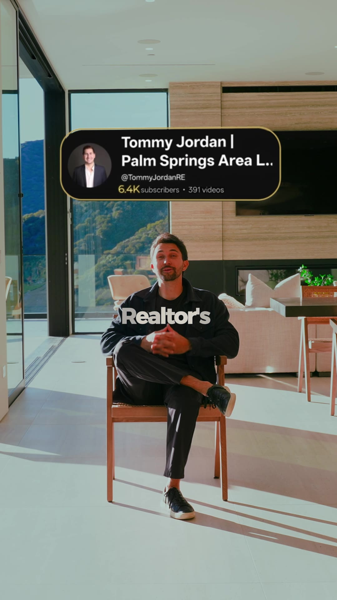

Idea behind the editPORTFOLIO / 01
Building a Realtor’s Business With YouTube
A warm, welcoming invitation to a realtor-focused webinar. The edit builds credibility with the client’s YouTube channel, collaboration and date/social-proof graphics, then highlights a business-doubling result within 12 months. According to the owner, the client achieved $1 million in GCI.